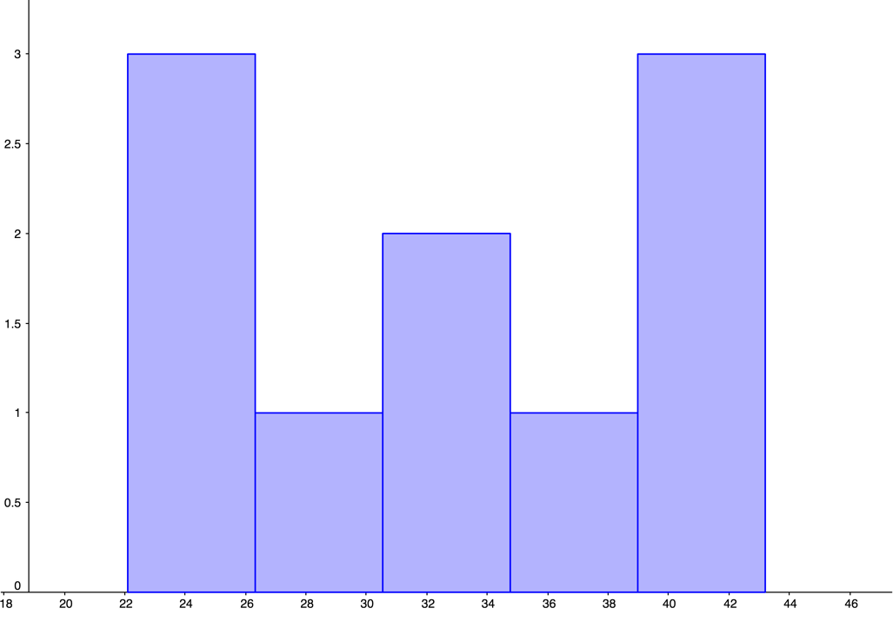

Section 4.4 Summary Statistics: Measures of Center
Objectives: Section 4.4 Summary Statistics: Measures of Center
Students will be able to:
Calculate and describe the measures of center: mean and median
Analyze the relationship of the mean and median to the shape of the data
Subsection 4.4.1 Calculating Summary Statistics
In addition to graphical and verbal descriptions, we can use numbers to summarize quantitative distributions. We want to know what an “average” value is (where the data is centered), and how spread out the values are. Together, the center and spread provide important information which can be used to estimate our population parameters. In this section we will discuss the measures of center and in the next section we will discuss the measures of spread.
Subsection 4.4.2 Measures of Center
There are a few different types of “averages” that measure the center, and the one we use will depend on the shape of the distribution. We will mention the mode but focus mainly on the two most common “averages”: the mean and the median.
Subsection 4.4.3 Mode
In the previous section, we saw that the modes are related to the peaks where similar values are grouped. The mode is the value with the highest frequency (A mode is the value where a peak occurs. One additional way to calculate the mode(s) is to take the midpoint of each peak in the histogram.)
Subsection 4.4.4 Mean
The mean, or more formally the arithmetic mean, is what probably comes to mind when you hear the word average. The calculation of the mean uses every data value in the distribution and is therefore strongly affected by skew and outliers.
To calculate the mean of a distribution, we divide the sum of the data values by the number of data values we have. The sample mean is usually represented by, a lower-case with a bar over it, read-bar. The lower-case letter n is used to represent the number of data values or sample size.
Mean.
Example 4.4.1.
Mirabel’s exam scores for her last math class were: 79, 86, 82, 94. What is her mean test score?
To find the mean test score we need to find the sum of her test scores, then divide the sum by the number of test scores (\(n=4\)). The mean is:
\(\bar{x}=\frac{79+86+82+94}{4}=85.25\) points
We will round the sample mean to one more decimal place than the original data. In this case, we would round 85.25 to 85.3 points. Also notice that the mean has the same units as the data and it is important to label it.
It is reasonable to calculate the mean by hand when the data set is small, but if the data set is large, or if you will be finding additional statistics, then technology is the way to go. We can find the mean of a data set using the spreadsheet formula =AVERAGE.
Example 4.4.2.
The price of peanut butter at 5 stores was $3.29, $3.59, $3.79, $3.75, and $3.99. Find the mean price using a spreadsheet. There are two ways to use the =AVERAGE formula. If your data set is not too large, you can enter each value directly into the formula. Using this method, we write
=AVERAGE(3.29 3.59, 3.79, 3.75, 3.99)
and we get an answer of $3.68.
The other method is to enter the data values into a single column (or row) of the spreadsheet and reference the column (or row) range in the formula. We can enter the range by highlighting the data values. As illustrated below, if we enter the data into column A, the formula is
=AVERAGE(A1:A5)

and we also get an answer of $3.68.
Sometimes when there is a lot of data with repeated values we are given a frequency table.
Example 4.4.3.
One hundred families from a particular neighborhood are randomly selected and asked to give their annual household income rounded to the nearest $5,000. The results are shown in the frequency table below.
| Income (thousands of dollars) |
Frequency |
|---|---|
| $15 | 6 |
| $20 | 8 |
| $25 | 11 |
| $30 | 17 |
| $35 | 19 |
| $40 | 20 |
| $45 | 12 |
| $50 | 7 |
Calculating the mean by hand could get tedious if we try to type in all 100 values:
We could calculate this more easily by noticing that adding 15 to itself six times is the same as \((15)(6)=90\text{.}\) Using this simplification, we get
The mean household income of our sample is 33.9 thousand dollars or $33,900.
We could also use =AVERAGE to find the mean for this example, but it would require entering each repeated value individually. If the mean is all we need, then taking advantage of multiplication as repeated addition is the more straightforward way to go. We could also enter the frequency table and the calculation above in a spreadsheet.
Example 4.4.4.
Extending the last example, suppose a new family moves into the neighborhood and has a household income of $5 million ($5000 thousand). Adding this to our sample, our mean becomes:
While 83.1 thousand dollars, or $83,100 is the correct mean household income for the new sample, it is no longer representative of the neighborhood – in fact, it is greater than every income in the sample aside from the new one we added!
Imagine the data values on a see-saw or balance scale. The mean is the value at the tip of the triangle that keeps the data in balance, like in the picture below.
If we graph our household data, the $5 million value is so far out to the right that the mean has to adjust to keep things in balance.

For this reason, when working with data that is skewed or has outliers, it is common to use a different measure of center, the median.
Subsection 4.4.5 Median
The median of a data set is the “middle” value, when the data are listed in order from smallest to largest. We can also think of the median as the value that has 50% of the data below it and 50% of data above it. As we will discover later, the median is also the 50th percentile.
Median.
If the number of data values is odd, then the median is the middle data value If the number of data values is even, then the median is the mean of the middle pair
Example 4.4.5.
When finding the median of an odd number of values.
Use the following quiz scores: 5, 10, 8, 6, 4, 8, 2, 5, 7, 7, 6
We must start by listing the data in order: 2, 4, 5, 5, 6, 6, 7, 7, 8, 8, 10.
It is helpful to mark or cross off the numbers as you list them to make sure you don’t miss any. Also, be sure to count the number of data values in your ordered list to make sure it matches the number of data values in the original list.
In this example there are 11 quiz scores. When the distribution contains an odd number of data values there will be a single number in the middle and that is the median. For small data sets, we can “walk” one value at a time from the ends of the ordered list towards the center to find the median
The median test score is 6 points.
Example 4.4.6.
When finding the median of an even number of values.
Use the following quiz scores: 2, 4, 5, 5, 6, 6, 7, 7, 8, 8, 10, 20.
There are now 12 quiz scores in our sample. When the distribution contains an even number of data values there will be a pair of values in the middle rather than a single value. Then we take the average of the middle two values.
Median\(=\frac{6+7}{2}=6.5\) points
What is important to notice is that despite adding an outlier to our data set, the median is largely unaffected. The median quiz score for the new distribution is 6.5 points.
We can also find the median using the spreadsheet formula =MEDIAN. Just like the spreadsheet function =AVERAGE, we can either list the individual data values in the formula, or we can enter the data values into a row (or column) and use the row range (or column range) in the formula.
Using the data values of the original distribution, we can write function as
=MEDIAN(2, 4, 5, 6, 6, 7, 7, 8, 8, 10)
or
=MEDIAN(A1:AK)

and we get 6 points for the median test score.
Example 4.4.7.
Let’s continue with our peanut butter example and find the median both by hand and with a spreadsheet. The price of peanut butter at 5 stores was $3.29, $3.59, $3.79, $3.75, and $3.99.
To find the median by hand, we must first list the prices in order. This give us: $3.29, $3.59, $3.75, $3.79, $3.99
Since there are an odd number of data values in the sample (\(n=5\)), we know that the median will be the single data value in the middle of the ordered list.
The median price of peanut butter at these five stores is $3.75.
Using a spreadsheet, we write
=MEDIAN(3.29, 3.59, 3.79, 3.75, 3.99)

and we get a median price of $3.75.
It is worth noting that when you use a spreadsheet to find the median you do not have to order the data first. You can enter the data values in the order they are given to you.
Subsection 4.4.6 The Relationship Between the Mean and the Median
If a distribution is skewed, the mean is pulled in the direction of the skew, as we saw in the see-saw diagram. In a right skewed distribution, the mean is greater than the median, while in a left skewed distribution, the mean is less than the median. If the distribution is symmetric, the mean and the median will be approximately equal.
To demonstrate this, we have entered some data in GeoGebra, as previously explained, and made histograms. To see the statistics that GeoGebra calculates, we click on the summation symbol \((\sum x)\) on the right-hand menu bar.
Example 4.4.8.
Fifty people from the Portland Metro area who are employed full time were sampled and their annual salaries were recorded (to the nearest thousand dollars). The histogram and summary statistics from GeoGebra are shown below.
From the histogram we can see that the shape of the distribution is unimodal and skewed to the right. We can see from the statistics output on the left that the mean is greater than the median. This is because the few people with higher incomes bring the average up.

Example 4.4.10.
A random selection of 30 math 105 exams at PCC were sampled and their scores were recorded. The histogram of the resulting distribution is shown below.
The shape of the distribution is unimodal and skewed to the left. There also appears to be an outlier between 20 and 30. We can see from the statistics output that the mean is less than the median. This is because the low test score brought the average down. points points

Example 4.4.12.
Nineteen people identifying as female were sampled and their heights (in inches) were recorded. The histogram of the resulting distribution is shown below.
The shape of the distribution is unimodal and roughly symmetric. We can also see from the statistics output that the mean and the median are approximately equal. inches inches

We can use these observations in reverse as well. If we know the mean is greater than the median, then we can expect the distribution to be skewed to the right. If the mean is less than the median, then we can expect the distribution to be skewed to the left. When the mean and the median are approximately equal, the distribution is likely to be symmetric.
Example 4.4.14.
Recent college graduates were asked how much student loan debt they have. The data has a mean of $46,265 and a median of $33,652. Just based on this information, do you expect the distribution to be symmetric, skewed to the left, or skewed to the right?
Since the mean is greater than the median, we can expect the distribution to be skewed to the right.
Exercises 4.4.7 Exercises
1.
A group of diners were asked how much they would pay for a meal. Their responses were: $7.50, $25.00, $10.00, $10.00, $7.50, $8.25, $9.00, $5.00, $15.00, $8.00, $7.25, $7.50, $8.00, $7.00. $12.00.
Find the mean, including units.
Find the median, including units.
Based on the mean and the median, would you expect the distribution to be symmetric, skewed left, or skewed right? Explain.
-
In Excel:
=average(7.50,25.00,10.00,10.00,7.50,8.25,9.00,5.00,15.00,8.00,7.25,7.50,8.00,7.00,12.00)\(=\$9.80\)
There are 15 times shown, so \(n=15\text{.}\) The mean is:
\begin{align*} \bar{x} \amp= \frac{(7.50+25.00+10.00+10.00+7.50+8.25+9.00+5.00+15.00+8.00+7.25+7.50+8.00+7.00+12.00)}{15}\\ \amp=\$9.80 \end{align*} -
In Excel:
=median(7.50,25.00,10.00,10.00,7.50,8.25,9.00,5.00,15.00,8.00,7.25,7.50,8.00,7.00,12.00)\(=\$8.00\)
There are 15 times shown, so \(n=15\text{.}\) We start by listing the data in order:
$5.00, $7.00, $7.25, $7.50, $7.50, $7.50, $8.00, $8.00, $8.25, $9.00, $10.00, $10.00, $12.00, $15.00, $25.00
\(Median=\$8.00\)
Since the mean is greater than the median, we would expect the distribution will be skewed right.
2.
The amount of commercials in an hour of television varies by channel. The total length (in minutes) of all commercials from 8 pm to 9 pm in for some selected broadcast and cable channels on a weekday evening were: 10, 12.75, 7, 9, 9.75, 6.5, 12.5, 12.5, 8.75, 17, 10.5, 2.
Find the mean, inluding units.
Find the median, including units.
Based on the mean and median, would you expect the distribution to be symmetric, skewed left, or skewed right?
-
In Excel:
=average(10, 12.75, 7, 9, 9.75, 6.5, 12.5, 12.5, 8.75, 17, 10.5, 2)\(=9.85\) minutes
There are 12 times shown, so \(n=12\text{.}\) The mean is:
\begin{align*} \bar{x} \amp= \frac{(10+ 12.75+7+9+9.75+6.5+12.5 + 12.5+ 8.75+ 17+ 10.5+ 2)}{12}\\ \amp=9.85 \text{ minutes} \end{align*} -
In Excel:
=median(10, 12.75, 7, 9, 9.75, 6.5, 12.5, 12.5, 8.75, 17, 10.5, 2)\(=9.88\) minutes
There are 12 times shown, so \(n=12\text{.}\) We start by listing the data in order:
2, 6.5, 7, 8.75, 9, 9.75, 10, 10.5, 12.5, 12.5, 12.75, 17
\begin{align*} Median\amp=\frac{9.75+10}{2}\\ \amp=9.88 \text{ minutes} \end{align*} Because the mean and median are approximately equal, we would expect that the distribution is symmetric.
3.
You recorded the time in seconds it took for 8 participants to solve a puzzle. The times were: 15.2, 18.8, 19.3, 19.7, 20.2, 21.8, 22.1, 29.4.
Find the mean, including units.
Find the median, including units.
Based on the mean and the median, would you expect the distribution to be symmetric, skewed left, or skewed right? Explain.
-
In Excel:
=average(15.2,18.8,19.3,19.7,20.2,21.8,22.1,29.4)\(=20.81\) seconds
There are 8 times shown, so \(n=8\text{.}\)
\begin{align*} \bar{x} \amp= \frac{(15.2+18.8+19.3+19.7+20.2+21.8+22.1+29.4)}{15}\\ \amp=20.81 \text{ seconds} \end{align*} -
In Excel:
=median(15.2,18.8,19.3,19.7,20.2,21.8,22.1,29.4)\(=19.95\) seconds
There are 8 times shown, so \(n=8\text{.}\) The times are given already in order:
15.2, 18.8, 19.3, 19.7, 20.2, 21.8, 22.1, 29.4
\begin{align*} Median\amp=\frac{19.7+20.2}{2}\\ \amp=19.95 \text{ seconds} \end{align*} Since the mean and median are approximately equal, we would expect that the distribution is symmetric.
4.
You weigh 9 Oreo cookies, and you find the weights (in grams) are: 3.49, 3.51, 3.51, 3.51, 3.52, 3.54, 3.55, 3.58, 3.61.
Find the mean, including units.
Find the median, including units.
Based on the mean and the median, would you expect the distribution to be symmetric, skewed left, or skewed right? Explain.
-
In Excel:
=average(3.49,3.51,3.51,3.51,3.52,3.54,3.55,3.58,3.61)\(=3.536\) grams
There are 9 weights shown, so \(n=9\text{.}\)
\begin{align*} \bar{x} \amp= \frac{(3.49+3.51+3.51+3.51+3.52+3.54+3.55+3.58+3.61)}{9}\\ \amp=3.536 \text{ grams} \end{align*} -
In Excel:
=median(3.49, 3.51, 3.51, 3.51, 3.52, 3.54, 3.55, 3.58, 3.61)\(=3.52\) grams
There are 9 weights shown, so \(n=9\text{.}\) The weights are already given in order:
3.49, 3.51, 3.51, 3.51, 3.52, 3.54, 3.55, 3.58, 3.61
\begin{gather*} Median=3.52 \text{ grams} \end{gather*} Since the mean and median are approximately equal, we would expect the distribution to be symmetric.
5.
Use the following table is the cost of purchasing a car at a local dealership. Some of the cars sold were new and some were used.
Calculate find the mean, including units.
Can you figure out how to find the median using the frequency table? See if you can do it without listing out all the data values.
-
Based on the mean and the median, would you expect the distribution to be symmetric skewed left or skewed right? Explain.
Cost
(Thousands of dollars)Frequency 15 3 20 7 25 10 30 15 35 13 40 11 45 9 50 7
-
In GeoGebra Classic, enter the costs into the column A and frequencies into column B of the spreadsheet and use the “One Variable Analysis” function. Then use the “Show Statistics” option.
\begin{gather*} Mean=33.8 \text{ thousand dollars} \end{gather*}The sum of the frequencies is 75, so \(n=75\)
\begin{align*} \bar{x}\amp=\frac{15⋅3+20⋅7+25⋅10+30⋅15+35⋅13+40⋅11+45⋅9+50⋅7}{75}\\ \amp=33.8 \text{ thousand dollars} \end{align*} -
In GeoGebra Classic, enter the costs into the column A and frequencies into column B of the spreadsheet and use the “One Variable Analysis” function. Then use the “Show Statistics” option.
\begin{gather*} Median=35 \text{ thousand dollars} \end{gather*}Since there are 75 values (an odd number), we know that the median will be the single middle data value. Because \(\frac{75}{2}=37.5\text{,}\) we know it will be the 38th value in the list. The 38th value is 35, so the median is 35 thousand dollars.
Since the mean is less than the median, we would expect the distribution to be skewed left.
6.
As part of a study of email, a researcher counted the length of 34 emails. The lengths of the emails are shown below, rounded to the nearest thousand characters (so a length 0 means that the numbers of characters rounded to 0, not that the message was blank). 39
Calculate and find the mean, including units.
Can you figure out how to find the median using the frequency table? See if you can do it without listing all the data values.
Based on the mean and the median, would you expect the distribution to be symmetric, skewed left, or skewed right?
| Length of an email (Thousands of characters) |
Frequency |
|---|---|
| 0 | 4 |
| 1 | 5 |
| 2 | 2 |
| 3 | 3 |
| 4 | 3 |
| 5 | 1 |
| 6 | 3 |
| 7 | 3 |
| 8 | 0 |
| 9 | 3 |
| 10 | 3 |
| 11 | 2 |
| 12 | 0 |
| 13 | 0 |
| 14 | 2 |
-
In GeoGebra Classic, enter the costs into the column A and frequencies into column B of the spreadsheet and use the “One Variable Analysis” function. Then use the “Show Statistics” option.
\begin{gather*} Mean=5.3 \text { thousand characters} \end{gather*}The sum of the frequencies is 34, so \(n=34\)
\begin{align*} \bar{x}\amp=\frac{(0⋅4+1⋅5+2⋅2+3⋅3+4⋅3+5⋅1+6⋅3+7⋅3+9⋅3+10⋅3+11⋅2+14⋅2)}{34}\\ \amp=5.3 \text{ thousand characters} \end{align*} -
In GeoGebra Classic, enter the costs into the column A and frequencies into column B of the spreadsheet and use the “One Variable Analysis” function. Then use the “Show Statistics” option.
\begin{gather*} Median=4.5 \text{ thousand characters} \end{gather*}Since there are 34 values (an even number), we know that the median will be the mean of the two middle values. Because \(\frac{34}{2}=17\text{,}\) we know the two middle values are the 17th and 18th values. The 17th value is 4, and the 18th value is 5, so the median is 4.5 thousand characters.
Since the mean is greater than the median, we expect the distribution to be skewed right.
7.
Studies are often done by pharmaceutical companies to determine the effectiveness of a treatment. Suppose that a new cancer drug is currently under study. Of interest is the average length of time in months patients live once starting the treatment. Two researchers each follow a different set of 40 cancer patients throughout their treatment. The following data (in months) are collected.
Find the mean and median of each group.
-
Compare and contrast the two groups.
Researcher 1: 3, 4, 11, 15, 16, 17, 22, 44, 37, 16, 14, 24, 25, 15, 26, 27, 33, 29, 35, 44, 13, 21, 22, 10, 12, 8, 40, 32, 26, 27, 31, 34, 29, 17, 8, 24, 18, 47, 33, 34
Researcher 2: 3, 14, 11, 5, 16, 17, 28, 41, 31, 18, 14, 14, 26, 25, 21, 22, 31, 2, 35, 44, 23, 21, 21, 16, 12, 18, 41, 22, 16, 25, 33, 34, 29, 13, 18, 24, 23, 42, 33, 29 5.
-
For Researcher 1:
In Excel:
=average(3,4,11,15,16,17,22,44,37,16,14,24,25,15,26,27,33,29,35,44,13,21,22,10,12,8,40,32,26,27,31,34,29,17,8,24,18,47,33,34)\(=23.6\) months.
=median(3,4,11,15,16,17,22,44,37,16,14,24,25,15,26,27,33,29,35,44,13,21,22,10,12,8,40,32,26,27,31,34,29,17,8,24,18,47,33,34)\(=24\) months
The mean for Researcher 1’s patients is 23.6 months, and the median for Researcher’s 1 patients is 24 months.
For Researcher 2:
In Excel:
=average(3,14,11,5,16,17,28,41,31,18,14,14,26,25,21,22,31,2,35,44,23,21,21,16,12,18,41,22,16,25,33,34,29,13,18,24,23,42,33,29)\(=22.8\) months
=median(3,14,11,5,16,17,28,41,31,18,14,14,26,25,21,22,31,2,35,44,23,21,21,16,12,18,41,22,16,25,33,34,29,13,18,24,23,42,33,29)\(=22\) months
The mean for Researcher 2’s patients is 22.8 months, and the median is 22 months
Both the mean and median for Researcher 1’s patients are greater than the mean and median for Researcher 2’s patients. So, on average, Researcher 1’s patients have a longer life time after starting the cancer treatment than Researcher 2’s patients.
8.
The US Census Bureau, in addition to counting the population of the US every 10 years, conducts yearly informational surveys, such as the American Community Survey (ACS). For the 2012 ACS, a randomly chosen group of 20 respondents (10 males, 10 females) answered a question about their incomes. 41
Males: $53,000; $70,000; $12,800; 30,000; $4,500; $42,000; $48,000; $60,000; $108,000; $11,000
Females: $1,600; $1,200; $20,000; $25,000; $670; $29,000; $44,000; $30,000; $5,800; $50,000
Find the mean and median of each group.
Compare and contrast the two groups.
-
For Males:
In Excel
=average(53000,70000,12800,30000,4500,42000,48000,60000,108000,11000)
\(=\$43,930\)
=median(53000,70000,12800,30000,4500,42000,48000,60000,108000,11000)
\(=\$45,000\)
The mean for males is $43,930, and the median for males is $45,000.
For Females:
=average(1600,1200,20000,25000,670,29000,44000,30000,5800,50000)
\(=\$20,727\)
=median(1600,1200,20000,25000,670,29000,44000,30000,5800,50000)
\(=\$22,500\)
The mean for females is $20,727, and the median for females is $22,500
Both the mean income and median income for the males in the sample were twice as large as the mean income and median income for the females in the sample. The difference between the mean and median income for the females was slightly larger than the mean and median income for the males, so the distribution of incomes for the females is possibly more skewed than the distribution for the males.
9.
An experiment compared the ability of three groups of participants to remember briefly-presented chess positions. The data are shown below. The numbers represent the average number of pieces correctly remembered from three chess positions.
Make a histogram for each group.
Find the mean of each group.
Find the median of each group
-
Compare the shapes of the distributions as well as the centers of the three groups.
Non-players Beginners Tournament Players 22.1 32.5 40.1 22.3 37.1 45.6 26.2 39.1 51.2 29.6 40.5 56.4 31.7 45.5 58.1 33.5 51.3 71.1 38.9 52.6 74.9 39.7 55.7 75.9 39.7 55.7 75.9 43.2 55.9 80.3 43.2 57.7 85.3
GeoGebra was used to create the histograms. You should check with your instructor to see if histograms are to be hand-drawn or computer generated. Answers will vary depending on the size of the margins and the programs you are using.
-

Figure 4.4.15. Histogram for Average Number of Pieces Correctly Remembered by Non-players 
Figure 4.4.16. Histogram for Average Number of Pieces Correctly Remembered by Beginners 
Figure 4.4.17. Histogram for Average Number of Pieces Correctly Remembered by Tournament Players -
The mean number of pieces correctly remembered for non-players was 33.65 pieces.
The mean number of pieces correctly remembered for beginners was 47.6 pieces.
The mean number of pieces correctly remembered for tournament players was 64.98 pieces.
-
The median number of pieces correctly remembered for non-players was 33.5 pieces.
The median number of pieces correctly remembered for beginners was 51.3 pieces.
The median number of pieces correctly remembered for tournament players was 71.1 pieces.
-
The distribution for non-players appears to be uniform. The distribution for beginners looks unimodal and left-skewed. The distribution for tournament players appears bimodal and symmetric.
The mean and median number of pieces correctly remembered were both greatest for tournament players, with non-players having the smallest mean and median of pieces correctly remembered.
10.
There is evidence that smiling can attenuate judgments of possible wrongdoing. This phenomenon termed the "smile-leniency effect" was the focus of a study by Marianne LaFrance & Marvin Hecht in 1995 43 . The following data are measurements of how lenient the sentences were for three different types of smiles and one neutral control. A higher number indicates greater leniency. The same subject was used for all of the conditions so that may affect the results.
Make a histogram for each smile type and the neutral control.
Find the mean for each type of smile and the neutral control.
Find the median for each type of smile and the neutral control.
-
Compare the shapes of the distributions as well as the centers for each type of smile and control.
False Smile Felt Smile Miserable Smile Nuetral Control 2.5 7 5.5 2 5.5 3 4 4 6.5 6 4 4 3.5 4.5 5 3 3 3.5 6 6 3.5 4 3.5 4.5 6 3 3.5 2 5 3 3.5 6 4 3.5 4 3 4.5 4.5 5.5 3 5 7 5.5 4.5 5.5 5 4.5 8 3.5 5 2.5 4 6 7.5 5.5 5 6.5 2.5 4.5 3.5 3 5 3 4.5 8 5.5 3.5 6.5 6.5 5.5 8 3.5 8 5 5 4.5 6 4 7.5 4.5 6 5 8 2.5 3 6.5 4 2.5 7 6.5 5.5 4.5 8 7 6.5 2.5 4 3.5 5 6 3 5 4 6 2.5 3.5 3 2 8 9 5 4 4.5 2.5 4 5.5 5.5 8.5 4 4 7.5 3.5 6 2.5 6 4.5 8 2.5 9 3.5 4.5 3 6.5 4.5 5.5 6.5
-
Figure 4.4.18. Histogram for Smile-Leniency of False Smiles Figure 4.4.19. Histogram for Smile-Leniency of Felt Smiless 
Figure 4.4.20. Histogram for Smile-Leniency of Miserable Smiles Figure 4.4.21. Histogram for Smile-Leniency of Neutral Control Group -
The mean leniency for the false smile group was 5.4.
The mean leniency for the felt smile group was 4.9.
The mean leniency for the miserable smile group was 4.9.
The mean leniency for the neutral control group was 4.1.
-
The median leniency for the false smile group was 5.5.
The median leniency for the felt smile group was 4.8.
The median leniency for the miserable smile group was 4.8.
The median leniency for the neutral control group was 4.0.
Answers will vary depending on the graphs created. The shape of the false smile is bimodal, whereas the miserable smile and neutral control groups are both unimodal. The miserable smile and neutral control both appear to be skewed to the right, however, comparing the mean to the median we see that there is not much of a difference. Therefore, none of the graphs are skewed. The felt smile group is the most visually uniform. The measures of center (mean and median) have the center of the false smile near 5.5, the felt smile and miserable smile both near 4.8, and the control near 4
11.
Make up three data sets with 5 values each that have:
The same mean but different medians
The same median but different means.
-
There are many possible answers for this problem. Three data sets with 5 values each that have the same mean but different medians are:
0, 0, 0, 0, 10 0, 0, 2, 4, 4 0, 1, 1, 1, 7 -
There are many possible answers for this problem. Three data sets with 5 values that have the same median but different means are:
10, 10, 10, 10, 10 0, 0, 10, 15, 20 1, 5, 10, 10, 10
12.
The frequency table below shows the number of women’s shoes that were sold in an hour at a local shoe store.
Would you treat this data as categorical or quantitative?
How would the bar graph be different from the histogram?
-
Treat the data as quantitative and find the mean and the median. Are these useful statistics?
Shoe Size Frequency 5 4 6 4 7 6 8 6 9 5
-
Argument for categorical: Because it is not clear that the shoe sizes represent a measure, the data can be considered categorical.
Argument for quantitative: Because shoe size is a measurement that corresponds to the length of someone’s foot, it can be treated as quantitative data.
Each graph would have frequency along the y-axis. In a bar graph the bars would have spaces between them and each bar would be labeled with the shoe size. In a histogram there would not be any spaces between the bars and the shoe sizes could be the scale on the x-axis.
-
The mean shoe size to be 7.2 and the median shoe size to be 7.
The mean shoe size is:
\begin{align*} \bar{x}\amp=\frac{(5⋅4+6⋅4+7⋅6+8⋅6+9⋅5)}{25}\\ \amp=7.2 \end{align*}Since there are 25 values (an odd number), we know that the median will be the single middle data value. Because \(\frac{25}{2}=12.5\text{,}\) we know it will be the 13th value in the list. The 13th value is 7, so the median shoe size is 7.
The mean and median shoe size might be useful statistics to the store. If shoe size is positively correlated to height, then a shoe store with a comparatively larger mean or median shoe size could determine that their clients are, on average, comparatively taller. (Other answers are possible.)
13.
At the end of the term, 400 students take a final exam, and their scores (as percentages) are plotted in a histogram. 46

Is the graph shown above skewed right, skewed left, or symmetric? Explain why you chose your answer.
Based on your answer to part (a), which would you expect: that the mean is less than the median, the mean is greater than the median, or that the mean and median are equal?
This graph is skewed left.
I expect that the mean is less than the median because the graph is skewed left.
14.
The following graph shows the distribution of yearly incomes of 40 patrons at a college coffee shop. 48

Is the graph shown above skewed right, skewed right, or symmetric? Explain why you chose your answer.
Based on your answer to part (a), which would you expect: that the mean is less than the median, the mean is greater than the median, or that the mean and median are equal?
This graph is symmetric. The graph has a single peak between $65,000 an $66,000, and there are approximately an equal number of data values on either side of this peak.
I expect that the mean and median are equal because the graph is symmetric.
15.
For each of the following distributions, would you expect that the mean is less than the median, less than the median, or equal to the median? Explain your reasoning.
Household incomes in the US
Weights of newborn babies
The number of children in a household in the US
Medical costs for all adults
Medical costs for adults in the US older than 65
Answers will vary.
https://www.openintro.org/stat/textbook.php?stat_book=apshttps://www.openintro.org/stat/textbook.php?stat_book=apshttp://www.onlinestatbook.com/https://creativecommons.org/licenses/by-sa/3.0/us/https://www.openintro.org/stat/textbook.php?stat_book=apshttps://www.openintro.org/stat/textbook.php?stat_book=aps